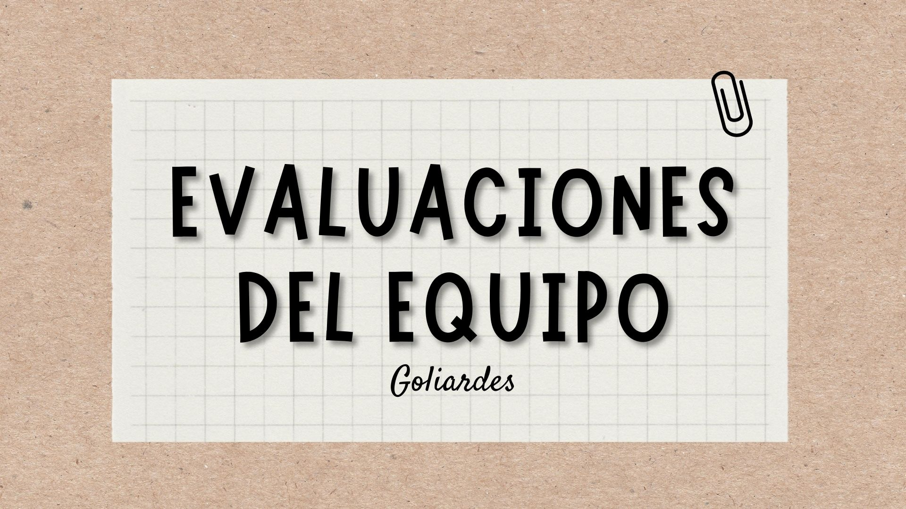
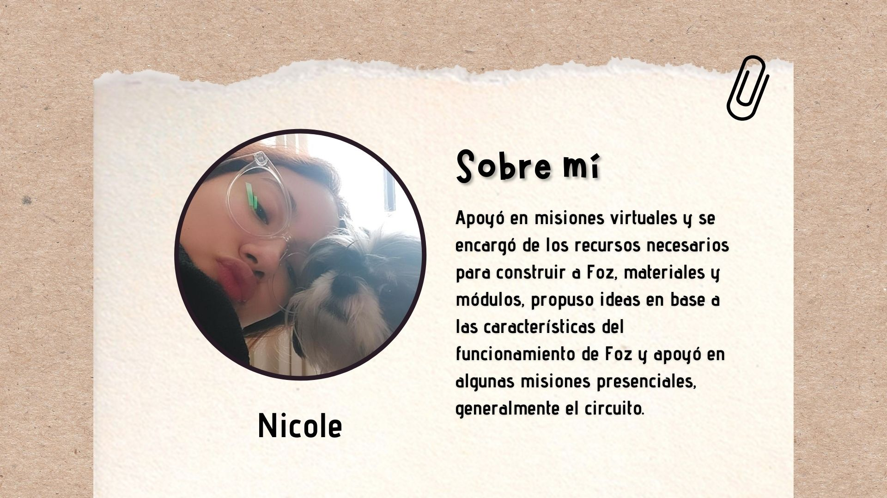
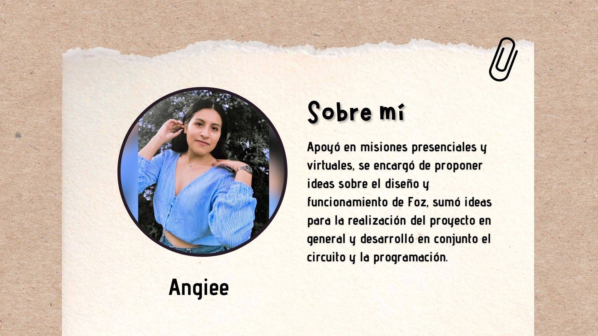
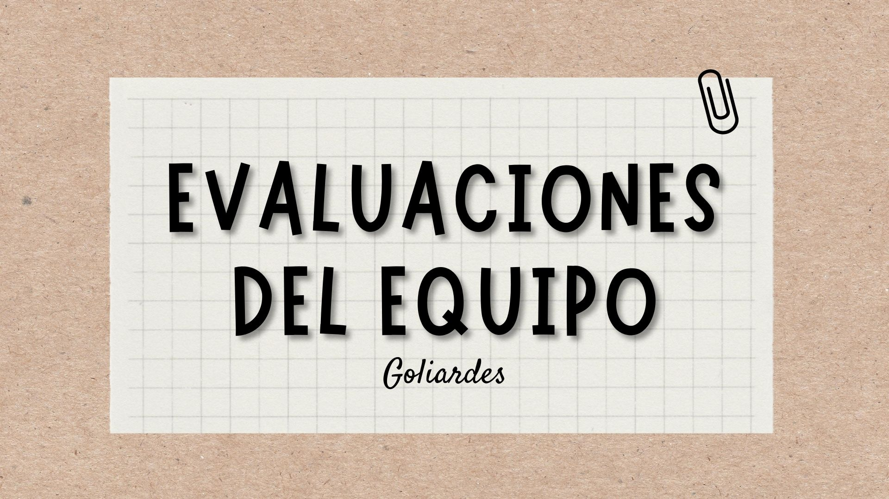
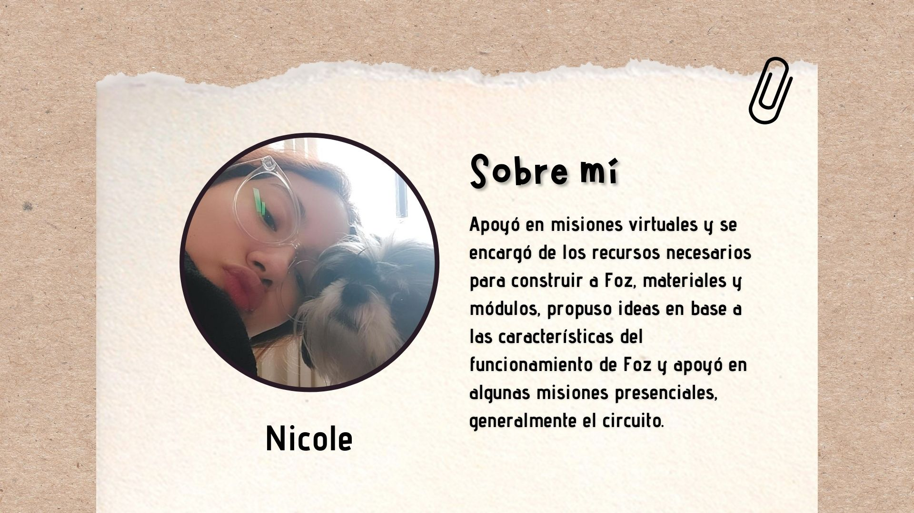
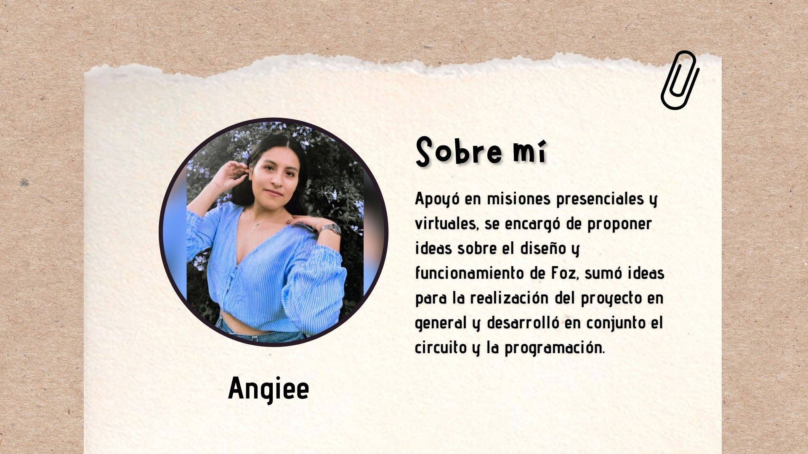
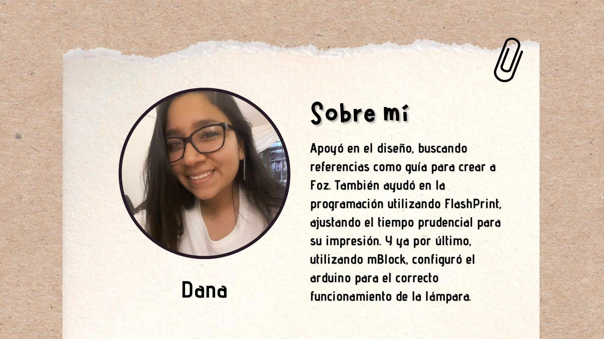
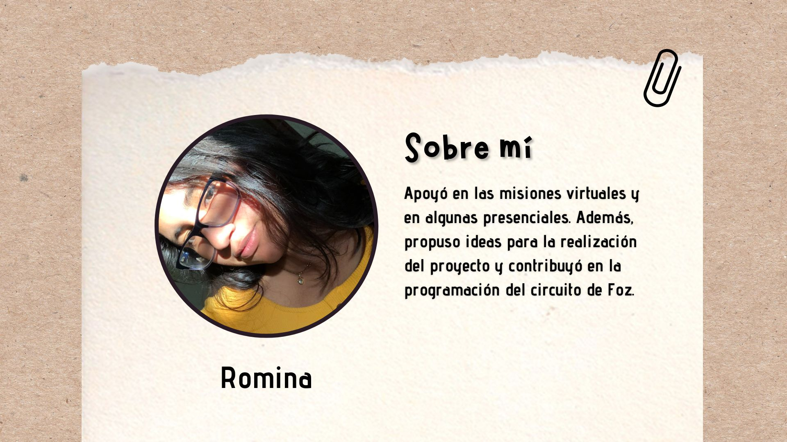
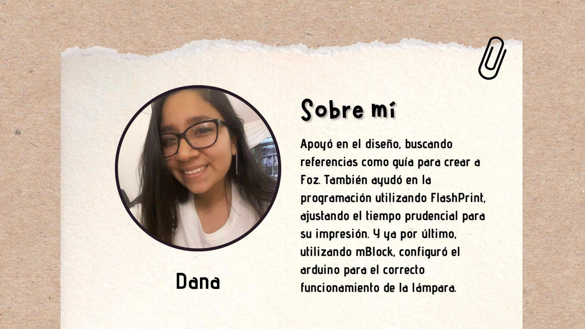
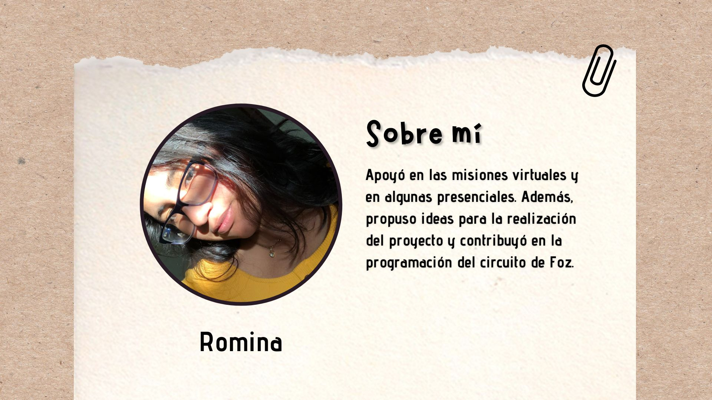

Infografía de FOZ


 





 



El proceso de FOZ
https://www.youtube.com/watch?v=r9KQ1hG5yLwIdeas de los integrantes
Idea de Cisco: Una lámpara LED que se enciende automáticamente cuando hay oscuridad. La lámpara se puede programar para encenderse a determinada hora, puedes elegir el color, además se puede apagar o prender cuando decidas solo aplaudiendo.
Idea de Nicole: Una lámpara que se prenda con el movimiento o cuando se decida solo aplaudiendo pero que también tenga un espejo infinito.
Idea de Romina: Mi idea también tenía que ver con una luz pero con un sensor de sonido, para que pudiera cambiar de color cuando se escucha música.
Idea de Angiee: Crear un dispositivo que funcione de manera automática con el objetivo de activarse ante el movimiento, en este caso sería una lámpara led que genere luces intermitentes y este funcionará con un sensor de movimiento.
Idea de Dana: Mi propuesta es agregar una pantalla con luz que pueda recibir mensajes de la persona que le haya regalado la lámpara, de esta forma interactúan para fortalecer el lazo de amistad.